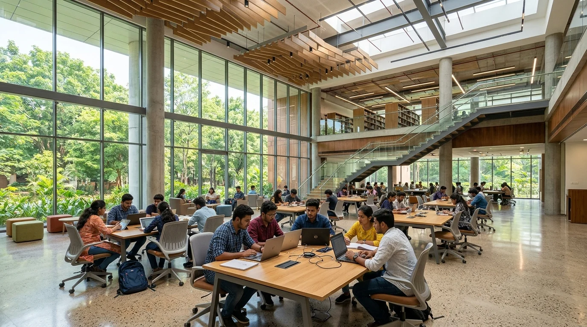
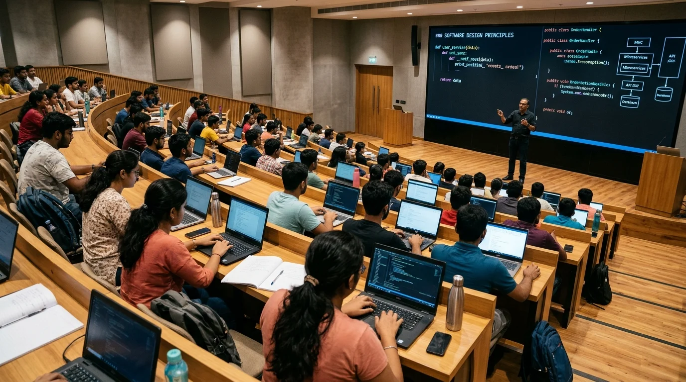
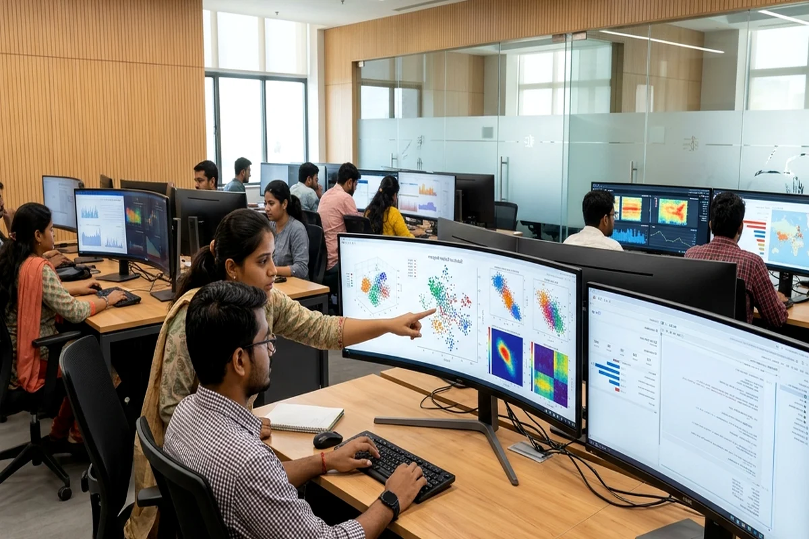
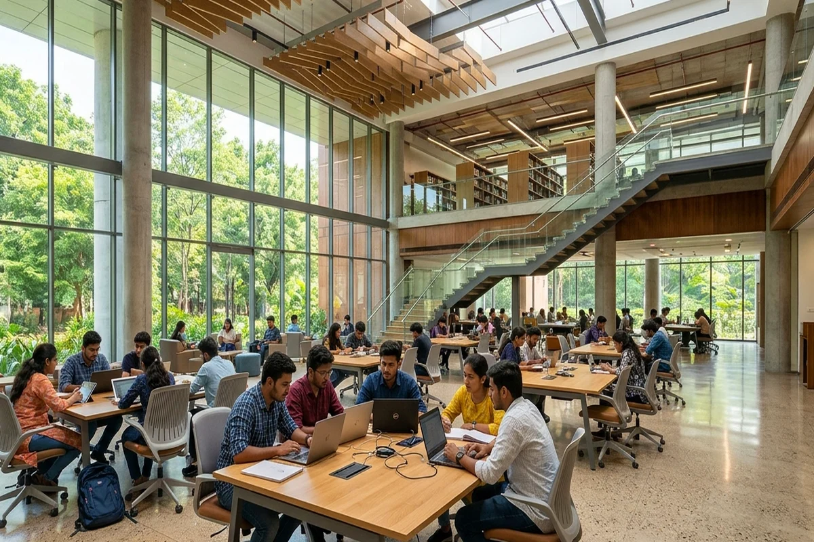
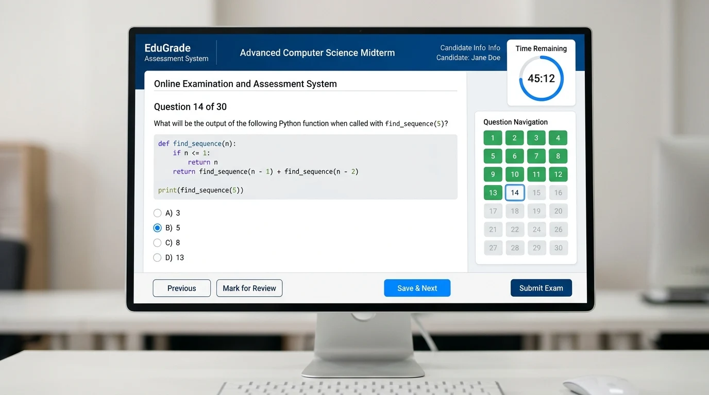
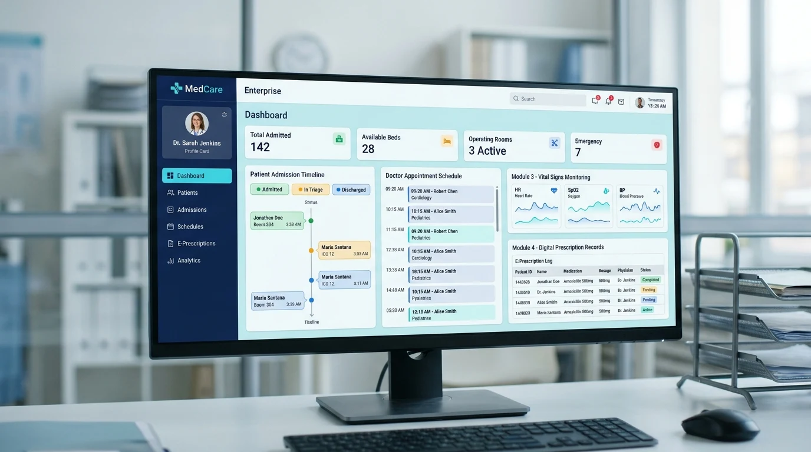
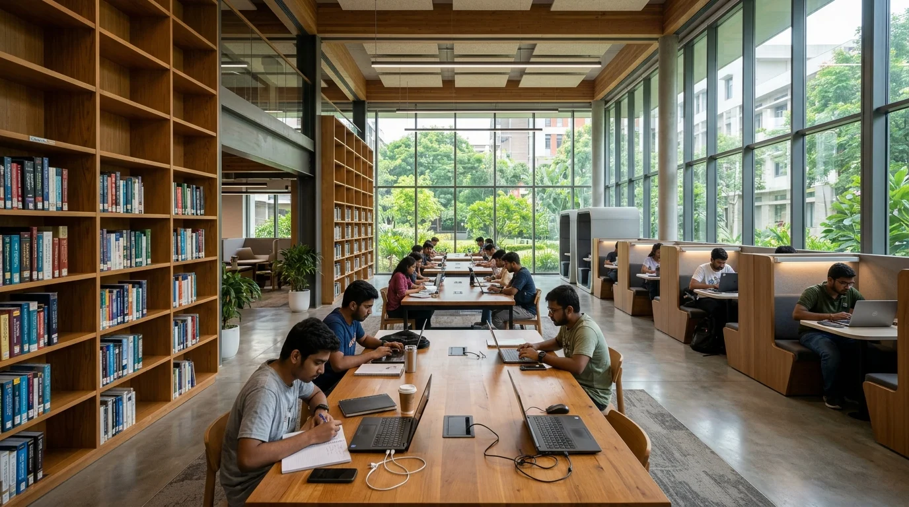

CORE 01
Programming in C and C++
Foundations of structured and object-oriented programming, memory management, pointers, and system-level code design.
Develop advanced computing knowledge, programming expertise, analytical thinking, and industry-ready skills through a modern Master of Computer Applications learning experience.

Computer applications and information technology continue to shape the modern world. A strong MCA learning environment helps students develop programming expertise, technical knowledge, analytical thinking, and practical software development skills.
To create an engaging learning environment that promotes technical knowledge, innovation, research, and professional development.
To prepare future technology professionals capable of solving real-world problems through computing and innovation.
A comprehensive postgraduate curriculum structured to build deep competency in core computer science principles, enterprise software architecture, and emerging technology paradigms.
Foundations of structured and object-oriented programming, memory management, pointers, and system-level code design.
Enterprise object-oriented programming, multithreading, collections framework, exception handling, and JVM architecture.
Rapid application scripting, functional programming constructs, automation libraries, and scientific computing packages.
Linear and non-linear data structures, graph and tree algorithms, asymptotic complexity analysis, and problem optimization.
Relational algebra, SQL query optimization, schema normalization, ACID transaction management, and NoSQL architectures.
Kernel architecture, process scheduling, concurrency control, deadlock handling, virtual memory, and Linux system internals.
OSI and TCP/IP protocol suites, routing algorithms, socket programming, wireless networks, and packet security analysis.
SDLC models, Agile and DevOps workflows, requirement analysis, UML system modeling, and automated quality assurance.
Modern HTML5, CSS3, JavaScript architectures, RESTful APIs, client-server communication, and responsive web engineering.
Distributed cloud infrastructure, virtualization, container orchestration, microservices, and scalable deployment models.
Heuristic search strategies, knowledge representation, natural language processing, and intelligent agent architectures.
Supervised and unsupervised learning, regression models, classification trees, neural networks, and model evaluation.
Advance your computing capabilities across six high-impact technology focus areas designed to align classroom theory with modern software practices.
Explore cognitive computing models, automated reasoning, deep learning architectures, and intelligent automation systems.
Master quantitative data pipelines, large-scale statistical inference, visual storytelling, and predictive forecasting.
Architect end-to-end web platforms combining responsive user interfaces, scalable server APIs, and distributed databases.
Understand defensive security architecture, cryptographic protocols, vulnerability auditing, and resilient network defense.
Design fault-tolerant cloud-native applications, virtualized compute clusters, and high-availability distributed systems.
Build performant mobile applications with intuitive touch interfaces, offline-first storage, and rigorous automated testing.
Our academic ecosystem is structured around hands-on coding, collaborative mentorship, and real-world software engineering workflows.
Academic modules designed to reflect modern software engineering standards, version control practices, and enterprise architectures.
Dedicated coding hours every week focusing on algorithmic problem-solving, clean code principles, and debugging techniques.
Well-equipped computing workspaces configured with development IDEs, database servers, and simulation environments.
Supportive faculty guidance across core computer science subjects, research methodologies, and capstone project execution.
Transform theoretical concepts into functional web applications, database systems, and analytical dashboards each semester.
Structured preparation featuring technical mock interviews, aptitude drills, resume workshops, and presentation skills.
Hands-on experimentation is central to the MCA learning journey. Explore our specialized computing laboratories designed for code compilation, network simulation, and data modeling.

Demo Facility 01Configured with multi-language compilers and IDEs for C, C++, Java, and Python algorithmic development and data structures practice.
 Demo Facility 02
Demo Facility 02
Dedicated environment for network topology simulation, packet analysis, socket programming, and Linux server administration.
 Demo Facility 03
Demo Facility 03
Equipped with relational RDBMS servers and NoSQL clusters for SQL query tuning, PL/SQL scripting, and schema design.

Demo Facility 04Focused on full-stack web engineering, Git version control workflows, UML modeling, and automated software testing suites.
High-performance computing environment supporting machine learning notebooks, statistical modeling, and visual analytics.

Demo Facility 06Collaborative innovation studio for sprint planning, architecture whiteboarding, and final-year capstone project integration.
A clear, streamlined five-step illustrative admission workflow for prospective Master of Computer Applications students.
Complete the online admission enquiry or application form with academic details and preferred learning domain.
Admissions coordinators review submitted academic transcripts and undergraduate course documentation.
Verification of qualifying degree criteria and state/national MCA entrance test scores, where applicable.
Academic counseling session or personal interaction (if applicable) to align student goals with program tracks.
Completion of document verification and seat confirmation formalities to begin your MCA academic journey.
Below is general illustrative eligibility information for Indian MCA aspirants. Please note that specific admission rules and eligibility criteria can differ between institutions, states, and affiliating universities.
Have questions regarding general eligibility, curriculum structure, or the admission timeline? Submit a demo admission enquiry below or visit our dedicated Admissions page.
A strong MCA education combines technical knowledge with practical projects, coding experience, analytical thinking, and career preparation.
Illustrative technology roles and sectors where MCA graduates apply their computing skills:
Structured training modules integrated alongside academic semesters:
Dedicated academic mentors guide students through algorithmic foundations, laboratory experiments, and software project architecture.
Specializes in object-oriented software construction, C++, Java enterprise architectures, and algorithmic problem-solving methodologies.
Focuses on statistical computing, exploratory data analysis, predictive modeling, and data visualization laboratories.
Guides student research and capstone projects in machine learning algorithms, neural networks, and natural language processing.
Specializes in relational database design, SQL query optimization, transaction concurrency, and distributed cloud storage.
Explore sample software engineering and data science project concepts built during practical MCA laboratory modules.

Illustrative academic portal for managing course enrollments, attendance logs, semester grading, and automated report generation.

Full-stack storefront featuring dynamic product catalogs, cart state management, order workflows, and inventory synchronization.

Browser-based assessment platform with randomized question banks, automated countdown timers, and instant score analytics.

Integrated workflow system for outpatient appointment scheduling, doctor availability tracking, and digital prescription records.

Conversational assistant utilizing natural language tokenization and intent classification to answer academic and technical FAQs.

Interactive visual analytics interface transforming raw CSV/SQL datasets into trend forecasts, heatmaps, and KPI summaries.

Smart campus utility mobile app concept featuring timetable alerts, study planner checklists, and offline note synchronization.

Stock tracking and supply chain utility with low-inventory threshold alerts, supplier logs, and automated audit reporting.
Explore illustrative visuals of a modern technology-focused college environment, from high-tech computer labs to collaborative student spaces. Click any image to view in full screen.




Illustrative reflections highlighting how structured laboratory sessions and project-based learning support technical growth.
"Working through Python programming labs and building neural network prototypes in the AI learning environment helped bridge mathematical concepts with practical software implementation."
"The emphasis on data structures, database normalization, and full-stack web architecture gave me the confidence to design complete end-to-end web applications from scratch."
"Regular coding sessions, SQL optimization exercises, and mock technical interviews created a structured pathway to transition from classroom theory to analytical problem solving."
Co-curricular coding challenges, workshops, and technical symposiums foster peer learning and rapid prototyping.
Timed algorithmic problem-solving contest testing data structures, dynamic programming, and code optimization in C++, Java, and Python.
Hands-on laboratory workshop exploring supervised machine learning pipelines, model training, and ethical AI deployment concepts.
Sample Date: Dec 04, 2026 (Demo)
Academic paper presentations, technical poster sessions, and panel discussions on cloud computing, cybersecurity, and distributed systems.
 Sample Date: Jan 22, 2027 (Demo)
Sample Date: Jan 22, 2027 (Demo)
Collaborative 24-hour sprint where student teams conceptualize, code, and demonstrate functional web and mobile prototypes.
Informative general answers for Indian students exploring a Master of Computer Applications degree.
Interested in pursuing a Master of Computer Applications? Share your details to explore your academic opportunities.
Phone: 0000000000 | Alt: 0000000000
Plot No. 000, Demo Road, Sample Area, Hyderabad, Telangana – 000000.
Complete the fields below to test the interactive frontend validation.